수질환경기사 (2019-08-04 기출문제)
1과목: 수질오염개론
1. 부조화형 호수가 아닌 것은?
- 부식영양형 호수
- 부영양형 호수
- 알칼리영양형 호수
- 산영양형 호수
(정답률: 78%)

2. 물의 이온화적(KW)에 관한 설명으로 옳은 것은?
- 25℃에서 물의 KW가 1.0×10-14이다.
- 물은 강전해질로서 거의 모두 전리된다.
- 수온이 높아지면 감소하는 경향이 있다.
- 순수의 pH는 7.0이며 온도가 증가할수록 pH는 높아진다.
(정답률: 67%)
3. 미생물을 진핵세포와 원핵세포로 나눌 때 원핵세포에는 없고 진핵 세포에만 있는 것은?
- 리보솜
- 세포소기관
- 세포벽
- DNA
(정답률: 81%)
4. 수중의 물질이동확산에 관한 설명으로 옳은 것은?
- 해역에서의 난류확산은 수평방향이 심하고 수직방향은 비교적 완만하다.
- 일정한 온도에서 일정량의 물에 용해하는 기체의 부피는 그 기체의 분압에 비례한다.
- 수중에서 오염물질의 확산속도는 분자량이 커질수록 작아지며, 기체 밀도의 제곱근에 반비례한다.
- 하천, 호수, 해역 등에 유입된 오염물질은 분자확산, 여과, 전도현상 등에 의해 점점 농도가 높아진다.
(정답률: 55%)
5. Alkalinity의 정의에서 물속에 Carbonate 만 있을 경우에 대한 설명으로 가장 거리가 먼 것은?
- pH는 약9.5이상이다.
- 페놀프탈레인 종말점은 Total Alkalinity의 절반이 된다.
- Carbonate Alkalinity는 Total Alkalinity와 같다
- 산을 주입시키면 사실상 페놀프탈레인 종말점만 찾을 수 있다.
(정답률: 56%)
6. 금속수산화물 M(OH)2의 용해도적(Kps)이 4.0×10-9이면 M(OH)2의 용해도(g/L)는? (단, M은 2가, M(OH)2의 분자량 = 80)
- 0.04
- 0.08
- 0.12
- 0.16
(정답률: 51%)
7. 하수의 BOD3 가 140mg/L이고 탈산소계수 k(상용대수)가 0.2/day 일 때 최종 BOD(mg/L)는?
- 약 164
- 약 172
- 약 187
- 약 196
(정답률: 62%)
8. 세포의 형태에 따른 세균의 종류를 올바르게 짝지은 것은?
- 구형 – Vibrio cholera
- 구형 – Spirilum volutans
- 막대형 – Bacillus subtilis
- 나선형 - Streptococcus
(정답률: 76%)
9. 미생물의 종류를 분류할 때, 탄소 공급원에 따른 분류는?
- Aerobic, Anaerobic
- Thermophilic, Psychrophilic
- Phytosynthetic, Chemosynthetic
- Autotrophic, Heterotrophic
(정답률: 74%)
10. 생분뇨의 BOD는 19500ppm, 염소이온 농도는 4500ppm이다. 정화조 방류수의 염소이온 농도가 225ppm이고 BOD농도가 30ppm일 때, 정화조의 BOD 제거 효율은(%)? (단, 희석 적용, 염소는 분해되지 않음)
- 96
- 97
- 98
- 99
(정답률: 54%)
11. glycine(CH2(NH2)COOH) 7몰을 분해하는데 필요한 이론적 산소 요구량(g O2/mol)은? (단, 최종산물은 HNO3, CO2, H2O이다.)
- 724
- 742
- 768
- 784
(정답률: 60%)
12. 아세트산(CH3COOH) 1000mg/L 용액의 pH가 3.0이었다면, 이 용액의 해리상수(Ka)는?
- 2×10-5
- 3×10-5
- 4×10-5
- 6×10-5
(정답률: 55%)
13. 오염물질 중 생분해성 유기물이 아닌 것은?
- 알코올
- PCB
- 전분
- 에스테르
(정답률: 69%)
14. 아래와 같은 반응에 관여하는 미생물은?
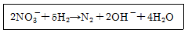
- Pseudomonas
- Sphaerotillus
- Acinetobacter
- Nitrosomonas
(정답률: 69%)
15. 하천이 바다로 유입되는 지역으로 반폐쇄성수역인 하구에서 물의 흐름에 대한 설명으로 틀린 것은?
- 밀도류에 의해 흐름이 발생한다.
- 조류의 증가나 감소에 의해 흐름이 발생한다.
- 간조나 만조사이에 물의 이동방향은 하류방향이다.
- 간조 시에는 담수의 흐름이 바다로 향한 이동에 작용한다.
(정답률: 59%)
16. 지구상에 분포하는 수량 중 빙하(만년설포함)다음으로 가장 많은 비율을 차지하고 있는 것은? (단, 담수기준)
- 하천수
- 지하수
- 대기습도
- 토양수
(정답률: 78%)
17. 다음 지하수의 특성에 대한 설명 중 잘못된 것은?
- 지하수는 국지적인 환경조건의 영향을 크게 받는다.
- 지하수의 염분농도는 지표수 평균농도 보다 낮다.
- 주로 세균에 의한 유기물 분해작용이 일어난다
- 지하수는 토양수내 유기물질 분해에 따른 탄산가스의 발생과 약산성의 빗물로 인하여 광물질이 용해되어 경도가 높다.
(정답률: 74%)
18. 0.1N HCl 용액 100ml에 0.2N NaOH 용액 75ml를 섞었을 때 혼합용액의 pH는? (단, 전리도는 100% 기준)
- 약 10.1
- 약 10.4
- 약 11.3
- 약 12.5
(정답률: 42%)
19. Streeter-Phelps 식의 기본가정이 틀린 것은?
- 오염원은 점오염원
- 하상퇴적물의 유기물분해를 고려하지 않음
- 조류의 광합성은 무시, 유기물의 분해는 1차 반응
- 하천의 흐름 방향 분산을 고려
(정답률: 66%)
20. 하천수의의 난류 확산 방정식과 상관성이 적은 인자는?
- 유량
- 침강속도
- 난류확산계수
- 유속
(정답률: 62%)
2과목: 상하수도계획
21. 관경 1100mm, 동수경사 2.4‰, 유속 1.63m/sec, 연장 L = 30.6m 일 때 역사이폰의 손실수두(m)는 약 얼마인가? (단, 손실수 두에 관한 여유 α = 0.042m)
- 0.42
- 0.32
- 0.25
- 0.16
(정답률: 51%)
22. 상수도시설인 배수지 용량에 대한 설명이다. ( )의 내용으로 옳은 것은?
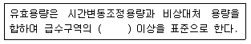
- 계획시간최대급수량의 8시간분
- 계획시간최대급수량의 12시간분
- 계획1일최대급수량의 8시간분
- 계획1일최대급수량의 12시간분
(정답률: 56%)
23. 저수시설을 형태적으로 분류할 때의 구분과 가장 거리가 먼 것은?
- 지하댐
- 하구둑
- 유수지
- 저류지
(정답률: 58%)
24. 지하수 취수 시 적용되는 양수량 중에서 적정양수량의 정의로 옳은 것은?
- 최대양수량의 80% 이하의 양수량
- 한계양수량의 80% 이하의 양수량
- 최대양수량의 70% 이하의 양수량
- 한계양수량의 70% 이하의 양수량
(정답률: 65%)
25. 유역면적이 40 ha, 유출계수 0.7, 유입시간 15분, 유하시간 10분인 지역에서의 합리식에 의한 우수관거 설계유량(m3/sec)은? (단, 강우강도 공식
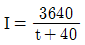
)- 4.36
- 5.09
- 5.60
- 7.01
(정답률: 57%)
26. 수돗물의 랑게리아지수에 관한 설명으로 틀린것은?
- 랑게리아지수는 pH, 칼슘경도, 알칼리도를 증가시킴으로써 개선할 수 있다.
- 물의 실제 pH와 이론적 pH(pHs : 수중의 탄산칼슘이 용해되거나 석출되지 않는 평형상태로 있을 때에 pH)와의 차이를 말한다.
- 지수가 양(+)의 값으로 절대치가 클수록 탄산칼슘의 석출이 일어나기 어렵다.
- 소석회・이산화탄소병용법은 칼슘경도, 유리탄산, 알칼리도가 낮은 원수의 랑게리아지수 개선에 알맞다.
(정답률: 71%)
27. 상수처리시설인 ‘착수정’에 관한 설명으로 틀린 것은?
- 형상은 일반적으로 직사각형 또는 원형으로 하고 유입구에는 제수밸브 등을 설치한다.
- 착수정의 고수위와 주변벽체의 상단 간에는 60cm 이상의 여유를 두어야 한다.
- 용량은 체류시간을 30~60분 정도로 한다.
- 수심은 3~5m 정도로 한다.
(정답률: 63%)
28. 정수처리를 위한 막여과설비에서 적절한 막여과의 유속 설정 시 고려사항으로 틀린 것은?
- 막의 종류
- 막공급의 수질과 최고 수온
- 전처리설비의 유무와 방법
- 입지조건과 설치공간
(정답률: 64%)
29. 지름 2000mm의 원심력 철근콘크리트관이 포설되어 있다. 만관으로 흐를 때의 유량(m3/s)은? (단，조도계수 = 0.015, 동수구배 = 0.001, Manning 공식 이용)
- 4.17
- 2.45
- 1.67
- 0.66
(정답률: 45%)
30. 취수탑의 취수구에 관한 설명으로 가장 거리가 먼 것은?
- 단면현상은 정방형을 표준으로 한다.
- 취수탑의 내측이나 외측에 슬루스게이트(제수문), 버터플라이밸브 또는 제수밸브 등을 설치한다.
- 전면에는 협잡물을 제거하기 위한 스크린을 3∼5cm 간격으로 취수구의 전면에 설치한다.
- 최하단에 설치하는 취수구는 계획최저수위를 기준으로 하고 갈수시에도 계획취수량을 확실하게 취수할 수 있는 것으로 한다.
(정답률: 55%)
31. 양수량(Q) 14m3/min, 전양정(H) 10m, 회전수(N) 1100rpm인 펌프의 비교회전도(Ns)는?
- 412
- 732
- 1302
- 1416
(정답률: 58%)
32. 도수시설인 접합정에 관한 설명으로 옳지 않은 것은?
- 접합정은 충분한 수밀성과 내구성을 지니며, 용량은 계획도수량의 1.5분 이상으로 한다.
- 유입속도가 큰 경우에는 접합정 내에 월류벽 등을 설치한다.
- 수압이 높은 경우에는 필요에 따라 수압제어용 밸브를 설치한다.
- 유출관의 유출구 중심높이는 저수위에서 관경의 2배 이상 높게 하는 것을 원칙으로 한다.
(정답률: 55%)
33. 정수시설인 막여과시설에서 막모듈의 파울링에 해당되는 내용은?
- 막모듈의 공급유로 또는 여과수 유로가 고형물로 폐색되어 흐르지 않는 상태
- 미생물과 막 재잴의 자화 또는 분비물의 작용에 의한 변화
- 건조되거나 수축으로 인한 막 구조의 비가역적인 변화
- 원수 중의 고형물이나 진동에 의한 막 면의 상처나 마모, 파단
(정답률: 65%)
34. 펌프의 제원 결정 시 고려하여야 할 사항이 아닌 것은?
- 전양정
- 비속도
- 토출량
- 구경
(정답률: 52%)
35. 정수장의 플록형성지에 관한 설명으로 틀린 것은?
- 플록형성지는 혼화지와 침전지 사이에 위치하고 침전지에 붙여서 설치한다.
- 플록형성시간은 계획정수량에 대하여 20~40분간을 표준으로 한다.
- 플록큐레이터의 주변속도는 15~80cm/sec로 한다.
- 플록형성지 내의 교반강도는 상류, 하류를 동일하게 유지하여 일정한 간동의 플록을 형성시킨다.
(정답률: 61%)
36. 우수관거 및 합류관거의 최소관경에 관한 내용으로 옳은 것은?
- 200mm를 표준으로 한다.
- 250mm를 표준으로 한다.
- 300mm를 표준으로 한다.
- 350mm를 표준으로 한다.
(정답률: 69%)
37. 상수도 취수 시 계획취수량의 기준은?
- 계획 1일 최대급수량의 10% 정도 증가된 수량으로 정함
- 계획 1일 평균급수량의 10% 정도 증가된 수량으로 정함
- 계획 1시간 최대급수량의 10% 정도 증가된 수량으로 정함
- 계획 1시간 평균급수량의 10% 정도 증가된 수량으로 정함
(정답률: 53%)
38. 하수관거 연결방법의 특징에 관한 설명 중 틀린 것은?
- 소켓(Socket)연결은 시공이 쉽고 고무링이나 압축조인트를 사용하는 경우에는 배수가 곤란한 곳에서도 시공이 가능하고 수밀성도 높다.
- 맞물림(Butt)연경은 중구경 및 대구경의 시공이 쉽고 배수가 곤란한 곳에서도 시공이 가능하다.
- 맞물림 연결은 수밀성도 있지만 연결부의 관두께가 얇기 때문에 연결부가 약하고 고무링으로 연결 시 누수의 원인이 된다.
- 맞대기 연결(수밀밴드사용)은 흄관의 Butt연결을 대체하는 방법으로서 수밀성이 크게 향상된 수밀밴드 등을 사용하여 시공한다
(정답률: 51%)
39. 펌프의 흡입(하수)관에 관한 설명으로 옳은것은?
- 흡입관은 각 펌프마다 설치할 필요는 없다.
- 흡입관을 수평으로 부설하는 것은 피한다.
- 횡축펌프의 토출관 끝은 마중물을 고려하여 수중에 잠기지 않도록 한다.
- 연결부나 기타 부근에서는 공기가 흡입되도록 한다.
(정답률: 50%)
40. 계획오염부하량 및 계획유입수질에 관한 내용으로 옳지 않은 것은?
- 관광오수에 의한 오염부하량은 당일관광과 숙박으로 나누고 각각의 원단위에서 추정한다.
- 영업오수에 의한 오염부하량은 업무의 종류 및 오수의 특징 등을 감안하여 결정한다.
- 생활오수에 의한 오염부하량은 1인1일당 오염부하량 원단위를 기초로 하여 정한다.
- 하수의 게획유입수질은 계획오염부하량을 계획 1일 최대오수량으로 나눈값으로 한다.
(정답률: 65%)
3과목: 수질오염방지기술
41. 암모니아 제거방법 중 파괴점염소주입처리의 단점으로 거리가 먼 것은?
- 용존성 고형물 증가.
- 많이 경비 소비.
- pH를 10 이상으로 높여야 함.
- THM 등 건강에 해로운 물질이 생성될 수 있다.
(정답률: 46%)
42. BOD에 대한 설명으로 가장 거리가 먼 것은?
- 최종 BOD가 같다고 해도 시간과 반응계수(K)에 따라 달라진다.
- 반응계수가 클수록 시간에 대한 산소소비율은 커진다.
- 질산화 박테리아의 성장이 늦기 때문에 반응초기에 많은 양의 질산화 박테리아가 존재하여도 5일 BOD실험에는 방해가 되지 않는다.
- 질산화 반응을 억제하기 위한 억제제(inhibitory agent)로는 methylene blue, thiourea 등이 있다.
(정답률: 54%)
43. 고농도의 유기물질(BOD)이 오염이 적은 수계에 배출될 때 나타나는 현상으로 가장 거리가 먼 것은?
- pH의 감소
- DO의 감소
- 박테리아의 증가
- 조류의 증가
(정답률: 52%)
44. 소화조 슬러지 주입율이 100m3/day이고, 슬러지의 SS 농도가 6.47%, 소화조 부피가 1250m3, SS내 VS 함유율이 85%일 때 소화조에 주입되는 VS의 용적부하(kg/m3ㆍday)는? (단, 슬러지의 비중은 1.0이다.)
- 1.4
- 2.4
- 3.4
- 4.4
(정답률: 43%)
45. 일차흐름반응인 분산 플러그 흐름 반응조 A물질의 전환율이 90%이고, 플러그 흐름 반응조에 대한 효율식을 사용하면 체류시간이 6.58h이다. 만일, 확산계수 d=1.0이라면 분산 플러그 흐름 반응조에 대한 반응조 체류시간(hr)은? (단,
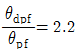
)- 11.4
- 14.5
- 23.1
- 45.7
(정답률: 41%)
46. 다음 조건의 활성슬러지조에서 1일 발생하는 잉여슬러지량(kg/day)은? (단, 유입수량 = 1⑤00m3/day, 유입수 BOD= 200mg/L, 유출수 BOD=20mg/L, Y=0.6, Kd=0.⑤/day, θc=10일)
- 624
- 756
- 847
- 966
(정답률: 36%)
47. 유량이 3000m3/day, BOD 농도가 400mg/L인 폐수를 활성슬러지법으로 처리할 때 내생호흡율(Kd, /day)은? (단, 포기시간= 8시간, 처리수농도(BOD=30mg/L, SS=30mg/L), MLSS농도=4000mg/L, 잉여슬러지 발생량=50m3/일, 잉여슬러지 농도=0.9%, 세포증식계수=0.8)은?
- 약 0.⑤2
- 약 0.087
- 약 0.123
- 약 0.183
(정답률: 30%)
48. A2/O 공법에 대한 설명으로 틀린 것은?
- 혐기조 – 무산소조 – 호기조 – 침전조 순으로 구성된다.
- A2/O 공정은 내부재순환이 있다.
- 미생물에 의한 인의 섭취는 주로 혐기조에서 일어난다.
- 무산소조에서 질산성질소가 질소가스로 전환된다.
(정답률: 61%)
49. 50m3/day의 폐수를 배출하는 도금공장에서 폐수 중에CN-가 150g/m3 함유되어 있다면 배출허용 농도를 1mg/L이하로 처리할 때 필요한 NaClO의 양(kg/day)은? (단, NaCN 49, NaClO 74.5, 반응식 2NaCN + 5NaClO + H2O → 2NaHCO3 + N2 + 5NaCl)
- 약 35
- 약 42
- 약 47
- 53
(정답률: 35%)
50. 분뇨의 생물학적 처리공법으로서 호기성 미생물이 아닌 혐기성 미생물을 이용한 혐기성처리공법을 주로 사용하는 근본적인 이유는?
- 분뇨에는 혐기성미생물이 살고 있기 때문에
- 분뇨에 포함된 오염물질은 혐기성미생물만이 분해할 수 있기 때문에
- 분뇨의 유기물 농도가 너무 높아 포기에 너무 많은 비용이 들기 때문에
- 혐기성처리공법으로 발생되는 메탄가스가 공법에 필수적이기 때문에
(정답률: 63%)
51. Langmuir 등온 흡착식을 유도하기 위한 가정으로 옳지 않은 것은?
- 한정된 표면만이 흡착에 이용된다.
- 표면에 흡착된 용질물질은 그 두께가 분자 한 개 정도의 두께이다.
- 흡착은 비가역적이다.
- 평형조건이 이루어졌다.
(정답률: 58%)
52. 하수 고도처리 도입 이유로 가장 거리가 먼 것은?
- 개방형 수역의 부영양화 촉진
- 방류수역의 수질환경기준의 달성
- 방류수역의 이용도 향상
- 처리수의 재이용
(정답률: 56%)
53. 폐수 중에 함유된 콜로이드 입자의 안정성은 Zeta 전위의 크기에 의존한다. Zeta 전위를 표시한 식으로 알맞은 것은? (단, q=단위면적당 전하, δ=전하가 영향을 미치는 전단 표면 주위의 층의 두께, D=액체의 도전상수)
- 4πδq/D
- 4πqD/δ
- πδq/4D
- πqD/4δ
(정답률: 54%)
54. 유효수심 3.5m, 체류시간 3시간인 일차침전지의 수면적 부하(m3/m2ㆍday)는?
- 14
- 28
- 56
- 112
(정답률: 56%)
55. 하수슬러지를 감량하고 혐기성 소화조의 처리효율을 증대하기 위해 다양한 슬러지 가용화 방법이 개발 및 적용되고 있다. 하수슬러지 가용화의 방법으로 적당하지 않은 것은?
- 오존처리
- 초음파처리
- 열적처리
- 염소처리
(정답률: 38%)
56. 폐수를 살수여상법으로 처리할 때 처리효율이 가장 좋은 것은?
- 저속여상(low-rate)
- 중속여상(intermediate-rate)
- 고속여상(high-rate)
- 초고속여상(super-rate)
(정답률: 61%)
57. 활성슬러지 혼합액의 고형물을 0.26%에서 3% 까지 농축하고자 할 때 가압순환 흐름이 있는 경우의 부상농축기를 설계하고자 한다. 다음의 조건하에서 소요 순환유량(m3/day)은? (단, A/S = 0.06, 온도 = 20℃, 공기용해도 = 18.7mL/L, 압력 = 3.7atm, 용존 공기비율 = 0.5, 부유고형물 농도 = 4000mg/L, 슬러지 유량 = 400m3/day)(문제 오류로 전항 정답처리 되었습니다. 여기서는 가답안인 2번을 누르면 정답 처리 됩니다.)
- 약 2500 m3/day
- 약 3000 m3/day
- 약 3500 m3/day
- 약 4000 m3/day
(정답률: 50%)
58. 기계식 봉 스크린을 0.64m/s로 흐르는 수로에 설치하고자 한다. 봉의 두께는 10mm 이고, 간격이 30mm라면 봉 사이로 지나는 유속(m/s)은?
- 0.75
- 0.80
- 0.85
- 0.90
(정답률: 47%)
59. 슬러지안정화방법 중 슬러지 내 중금속을 제거시키는 방법으로 가장 알맞은 것은?
- 석회석 안정화
- 습식 산화법
- 염소 산화법
- 혐기성 소화
(정답률: 47%)
60. 회전원판법의 장ㆍ단점에 대한 설명으로 틀린 것은?
- 단회로 현상의 제어가 어렵다.
- 폐수량 변화에 강하다.
- 파리는 발생하지 않으나 하루살이가 발생하는 수가 있다.
- 활성슬러지법에 비해 최종침전지에서 미세한 부유물질이 유출되기 쉽다.
(정답률: 53%)
4과목: 수질오염공정시험기준
61. 수질오염공정시험기준 상 냄새 측정에 관한 내용으로 옳지 않은 것은?
- 물속의 냄새를 측정하기 위하여 측정자의 후각을 이용하는 방법이다.
- 잔류염소의 냄새는 측정에서 제외한다.
- 냄새 역치는 냄새를 감지할 수 있는 최대 희석배수를 말한다.
- 각 판정요원의 냄새의 역치를 산술평균하여 결과를 보고한다.
(정답률: 62%)
62. 식물성 플랑크톤의 정량시험 중 저배율에 의한 방법은? (단, 200배율 이하)
- 스트립 이용 계수
- 팔머-말로니 챔버 이용 계수
- 혈구계수기 이용 계수
- 최적 확수 이용 계수
(정답률: 54%)
63. 예상 BOD값에 대하나 사전 경험이 없을 때에는 희석하여 시료를 조제한다. 처리하지 않은 공장폐수와 침전된 하수가 시료에 함유되는 정도는?
- 0.1~1.0%
- 1~5%
- 5~25%
- 25~100%
(정답률: 47%)
64. 이온전극법에 대한 설명으로 틀린 것은?
- 시료용액의 교반은 이온전극의 응답속도이외의 전극범위, 정량한계값에는 영향을 미치지 않는다.
- 전극과 비교전극을 사용하여 전위를 측정하고 그 전위차로부터 정량하는 방법이다
- 이온전극법에 사용하는 장치의 기본구성은 비교전극, 이온전극, 자석교반기, 저항전위계, 이온측정기 등으로 되어 있다.
- 이온전극의 종류에는 유리막 전극, 고체막전극, 격막형 전극으로 구분된다.
(정답률: 53%)
65. 수산화나트륨 1g을 증류수에 용해시켜 400mL로 하였을 때 이 용액의 pH는?
- 13.8
- 12.8
- 11.8
- 10.8
(정답률: 50%)
66. 퍼지·트랩-기체크로마토그래프(질량분석법)법으로 분석하는 휘발성 저급탄화수소와 가장 거리가 먼 것은?
- 벤젠
- 사염화탄소
- 폴리클로리네이티드비페닐
- 환원,1-아이클로로에틸렌
(정답률: 37%)
67. 폐놀류-자외선/가시선 분광법의 분석에 대한 측정원리에 관한 설명으로 ( )에 옳은 것은?
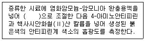
- pH 7
- pH 8
- pH 9
- pH 10
(정답률: 52%)
68. 용존산소 측정 시 티오황산나트륨 표준용액을 표정할 때 표준물질로 사용되는 KIO3는 아래와 같은 반응을 한다. 이 때 0.1N KIO3 용액을 만들려면 KIO3 몇 g을 달아 물에 녹여 1L로 만들면 되는가? (단, 분자량 KIO3=214)
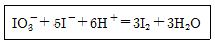
- 21.4
- 4.28
- 3.57
- 2.14
(정답률: 27%)
69. 총인을 아스코르빈산 환원법에 의해 흡광도를 측정할 때 880nm에서 측정이 불가능한 경우, 어느 파장(nm)에서 측정할 수 있는가?
- 560
- 660
- 710
- 810
(정답률: 43%)
70. 고형물질이 많아 관을 메울 우려가 있는 폐ㆍ하수의 관내 유량을 측정하는 장치로 가장 옳은 것은?
- 자기식 유량측정기(Magnetic Flow Meter)
- 유량측정용 노즐(Nozzle)
- 파샬풀름(Parshall Flume)
- 피토우관(Pitot)
(정답률: 53%)
71. 시료채취시 유의사항에 관한 내용으로 옳지 않은 것은?
- 채취용기는 시료를 채우기 전에 시료로 3회 이상 세척 후 사용한다.
- 수소이온을 측정하기 위한 시료를 채취할 때에는 운반중 공기와 접촉이 없도록 용기에 가득 채운다.
- 휘발성유기화합물 분석용 시료를 채취할 때에는 뚜겅에 격막이 생성되지 않도록 주의한다.
- 새료채취량은 시험항목 및 시험회수에 따라 차이가 있으나 보통 3~5리터 정도이다.
(정답률: 56%)
72. 중금속 측정을 위하여 물 250mL를 비이커에 취하여 질산(비중:1.409, 70%)을 5 mL 첨가하고, 가열하여 액량을 5 mL로 증발 농축한후, 방냉한 다음 여과하여 물을 첨가하여 정확히 100mL로 할 경우 규정농도(N)는? (단, 질산의 손실은 없다고 가정)
- 0.04
- 0.07
- 0.35
- 0.78
(정답률: 18%)
73. 물의 알칼리도를 측정하기 위해 50mL의 시료를 N/50 황산으로 측정하여 phenolphthalein 지시약의 종점에서 4.3mg, methyl orange 지시약의 종점에서 13.5mg이였다. 이 물의 총 알칼리도(mg/L CaCO3)는? (단, 1/50 황산의 역가=1)
- 68
- 120
- 186
- 270
(정답률: 23%)
74. 자외선/가시선 분광법에 의한 페놀류의 측정원리를 설명한 내용 중 옳지 않은 것은?
- 수용액에서는 510mm에서 흡광도를 측정한다.
- 클로로폼용액에서는 460nm에서 흡광도를 측정한다.
- 추출법의 정량한계는 0.1mg/L 이다.
- 황 화합물의 간섭이 있는 경우 인산(H3PO4)이 사용된다.
(정답률: 57%)
75. Io단색광이 정색액을 통과할 때 그 빛의 50%가 흡수된다면 이 경우 흡광도는?
- 0.6
- 0.5
- 0.3
- 0.2
(정답률: 54%)
76. 다음 용어의 정의로 옳지 않은 것은?
- 밀폐용기: 취급 또는 저장하는 동안에 이물질이 들어가거나 또는 내용물이 손실 되지 아니하도록 보호하는 용기를 말한다.
- 즉시: 30초 이내에 표시된 조작을 하는 것을 뜻한다.
- 정확히 단다: 규정된 수치의 무게를 0.001mg까지 다는 것을 말한다.
- 냄새가 없다: 냄새가 없거나 또는 거의 없는 것을 표시하는 것이다.
(정답률: 60%)
77. 지하수 시료는 취수정 내에 고여 있는 물과 원래 지하수의 성상이 달라질 수 있으므로 고여 있는 물을 충분히 퍼낸 다음 새로 나온 물을 채취한다. 이 경우 퍼내는 양은?
- 고여 있는 물의 절반 정도
- 고여 있는 물의 전체량 정도
- 고여 있는 물의 2~3배 정도
- 고여 있는 물의 4~5배 정도
(정답률: 51%)
78. 검정곡선 작성용 표준용액과 시료에 동일한 양의 내부표준물질을 첨가하여 시험분석 절차, 기기 또는 시스템의 변동으로 발생하는 오차를 보정하기 위해 사용하는 방법은?
- 검량선법
- 표준물 첨가법
- 절대검량선법
- 내부표준법
(정답률: 50%)
79. 폐수의 유량 측정법에 있어 1m3/min 이하로 폐수유량이 배출될 경우 용기에 의한 측정방법에 관한 내용이다. ( )에 옳은 내용은?
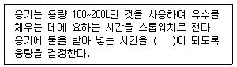
- 10초 이상
- 20초 이상
- 30초 이상
- 40초 이상
(정답률: 50%)
80. 다음 시험항목 중 측정할 때 증류장치가 필요하지 않는 것은?
- 암모니아성 질소 시험법
- 아질산성 질소 시험법
- 페놀류 시험법
- 시안 시험법
(정답률: 37%)
5과목: 수질환경관계법규
81. 시·도지사 등은 수질오염물질 배출량 등의 확인을 위한 오염도검사를 통보를 받은 날부터 며칠 이내에 사업자에게 배출농도 및 일일 유량에 관한 사항을 통보해야 하는가?
- 5일
- 10일
- 15일
- 20일
(정답률: 45%)
82. 기술요원 또는 환경기술인의 교육기관으로 알맞게 짝지어진 것은?
- 국립환경과학원 - 환경보전협회
- 환경관리협회 - 시도보건환경연구원
- 국립환경인력개발원 - 환경보전협회
- 환경관리협회 - 국립환경과학원
(정답률: 54%)
83. 폐수배출시설에 대한 변경허가를 받지 아니하거나 거짓으로 변경허가를 받아 배출시설을 변경하거나 그 배출시설을 이용하여 조업한 자에 대한 처벌기준은?
- 7년 이하의 징역 또는 7천만원 이하의 벌금
- 5년 이하의 징역 또는 5천만원 이하의 벌금
- 3년 이하의 징역 또는 3천만원 이하의 벌금
- 1년 이하의 징역 또는 1천만원 이하의 벌금
(정답률: 38%)
84. 조류경보 단계의 종류와 경보단계별 발령,해제기준으로 틀린 것은?
- 관심 - 2회 연속 채취 시 남조류 세포수가 1000세포/mL 이상 10000세포/mL 미만인 경우
- 경계 - 2회 연속 채취 시 남조류 세포수가 10000세포/mL 이상 1000000세포/mL 미만인 경우
- 조류대발생 - 2회 연속 채취 시 남조류 세포수가 1000000세포/mL 이상 경우
- 해제 - 2회 연속 채취 시 남조류 세포수가 1000세포/mL 이상인 경우
(정답률: 54%)
85. 환경부장관이 수립하는 대권역 수질 및 수생태계 보전을 위한 기본계획에 포함되어야 하는 사항으로 틀린 것은?
- 수질오염관리 기본 및 시행계획
- 점오염원, 비점오염원 및 기타 수질오염원에 의한 수질오염물질의 양
- 점오염원, 비점오염원 및 기타 수질오염원의 분포현황
- 수질 및 수생태계 변화 추이 및 목표기준
(정답률: 27%)
86. 다음은 기타 수질오염원의 설치ㆍ관리자가 하여야 할 조치에 관한 내용이다. ( )안에 옳은 내용은?
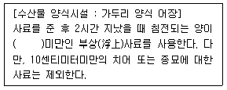
- 10%
- 20%
- 30%
- 40%
(정답률: 44%)
87. 배출시설에 대한 일일기준초과배출량 산정에 적용되는 일일유량은 (측정유량×일일조업시간)이다. 일일유량을 구하기 위한 일일조업 시간에 대한 설명으로 ( )에 맞는 것은?
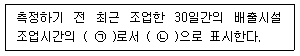
- ㉠ 평균치, ㉡ 분(min)
- ㉠ 평균치, ㉡ 시간(HR)
- ㉠ 최대치, ㉡ 분(min)
- ㉠ 최대치, ㉡ 시간(HR)
(정답률: 53%)
88. 수질 및 수생태계 중 하천의 생활환경 기준으로 틀린 것은? (단, 등급 : 약간좋음, 단위 : mg/L)
- TOC : 2 이하
- BOD : 3 이하
- SS : 25 이하
- DO : 5.0 이상
(정답률: 33%)
89. 수질오염방지시설 중 물리적 처리시설에 해당되는 것은?
- 폭기시설
- 산화시설(산화조 또는 산화지)
- 이온교환시설
- 부상시설
(정답률: 51%)
90. 환경부장관 또는 시도지사가 측정망을 설치하기 위한 측정망 설치계획에 포함시켜야 하는 사항과 가장 거리가 먼 것은?
- 측정망 배치도
- 측정망 설치시기
- 측정자료의 확인방법
- 측정망 운영방법
(정답률: 38%)
91. 수변생태구역의 매수·조성 등에 관한 내용으로 ( )에 옳은 것은?
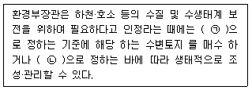
- ㉠ 환경부령, ㉡ 대통령령
- ㉠ 대통령령, ㉡ 환경부령
- ㉠ 환경부령, ㉡ 국무총리령
- ㉠ 국무총리령, ㉡ 환경부령
(정답률: 57%)
92. 오염총량관리 조사ㆍ연구반의 수행 업무와 가장 거리가 먼 것은?
- 오염총량관리기본계획에 대한 검토
- 오염총량관리시행계획에 대한 검토
- 오염총량관리 성과지표에 대한 검토
- 오염총량목표수질 설정을 위하여 필요한 수계특성에 대한 조사·연구
(정답률: 46%)
93. 간이공공하수처리시설에서 배출하는 하수찌꺼기 성분 검사주기는?
- 월 1회 이상
- 분기 1회 이상
- 반기 1회 이상
- 연 1회 이상
(정답률: 36%)
94. 공공폐수처리시설의 유지ㆍ관리기준 중 처리시설의 관리ㆍ운영자가 실시하여야 하는 방류수 수질검사에 관한 내용으로 ( )에 옳은 것은? (단, 방류수 수질은 현저하게 악화되지 않음)
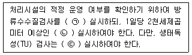
- 가：월 1회 이상, 나：주 1회 이상, 다：월 2회 이상
- 가：월 1회 이상, 나：월 2회 이상, 다：주 1회 이상
- 가：월 2회 이상, 나：주 1회 이상, 다：월 1회 이상
- 가：월 2회 이상, 나：월 1회 이상, 다：주 1회 이상
(정답률: 49%)
95. 물환경보전법 상 호소 및 해당 지역에 관한 설명으로 틀린 것은?
- 제방(사방사업법의 사방시설 포함)을 쌓아 하천에 흐르는 물을 가두어 놓은 곳
- 하천에 흐르는 물이 자연적으로 가두어진 곳
- 화산활동 등으로 인하여 함몰된 지역에 물이 가두어진 곳
- 댐, 보를 쌓아 하천 또는 계곡에 흐르는 물을 가두어 놓은 곳
(정답률: 54%)
96. 환경부장관이 물환경을 보전할 필요가 있다고 지정, 고시하고 물환경을 정기적으로 조사·측정 및 분석하여야 하는 호소의 기준으로 틀린 것은?
- 1일 30만톤 이상의 원수를 취수하는 호소
- 만수위일 때 면적이 10만 제곱미터 이상인 호소
- 수질오염이 심하여 특별한 관리가 필요하다고 인정되는 호소
- 동식물의 서식지·도래지이거나 생물다양성이 풍부하여 특별히 보전할 필요가 있다고 인정되는 호소
(정답률: 54%)
97. 수질 및 수생태계 보전에 관한 법률상 용어의 정의로 옳지 않은 것은?
- 비점오염저감시설이란 수질오염방지시설 중 비점오염원으로부터 배출되는 수질오염물질을 제거하거나 감소하게 하는 시설로서 환경부령이 정하는 것을 말한다.
- 공공수역이란 하천, 호소, 항만, 연안해역, 그 밖에 공공용에 사용되는 수역과 이에 접속하여 공공용으로 사용되는 환경부령이 정하는 수로를 말한다.
- 비점오염원이란 도시, 도로, 농지, 산지, 공사장 등으로 서 불특정 장소에서 불특정하게 수질오염물질을 배출하는 배출원을 말한다.
- 기타수질오염원이란 비점오염원으로 관리되지 아니하는 특정수질오염물질을 배출하는 시설로서 환경부령이 정하는것을 말한다.
(정답률: 44%)
98. 수질자동측정기기 및 부대시설을 모두 부착하지 아니할 수 있는 시설의 기준으로 옳은 것은?
- 연간 조업일수가 60일 미만인 사업장
- 연간 조업일수가 90일 미만인 사업장
- 연간 조업일수가 120일 미만인 사업장
- 연간 조업일수가 150일 미만인 사업장
(정답률: 54%)
99. 수질오염방지시설 중 생물화학적 처리시설이 아닌 것은?
- 접촉조
- 살균시설
- 폭기시설
- 살수여과상
(정답률: 50%)
100. 비점오염원으로부터 배출되는 수질오염물질을 제거하거나 감소하게 하는 비점오염저감 시설을 자연형 시설과 장치형 시설로 구분할 때 바르게 나열한 것은?
- 자연형 시설: 여과형 시설, 와류형 시설
- 장치형 시설: 스크린형 시설, 생물학적 처리형 시설
- 자연형 시설: 식생형 시설, 와류형 시설
- 장치형 시설: 저류시설, 침투시설
(정답률: 44%)